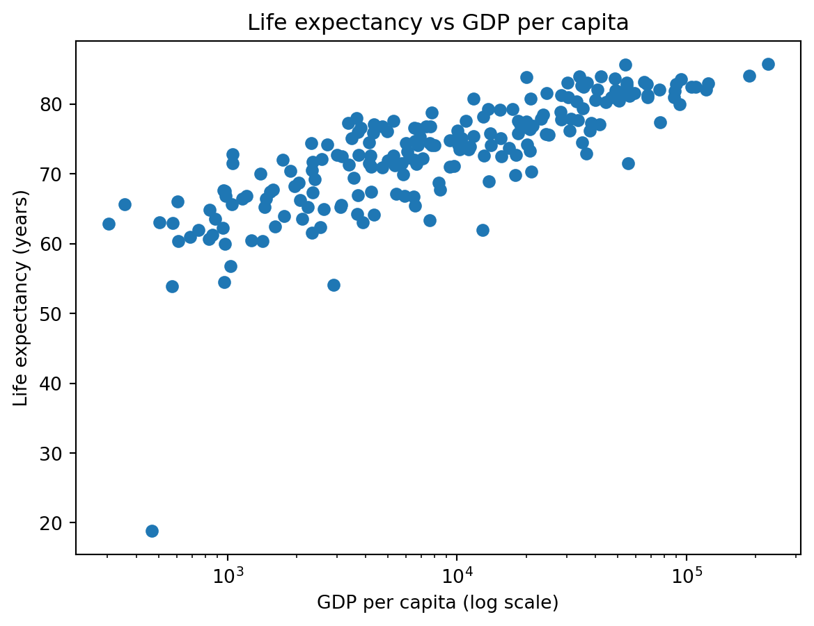
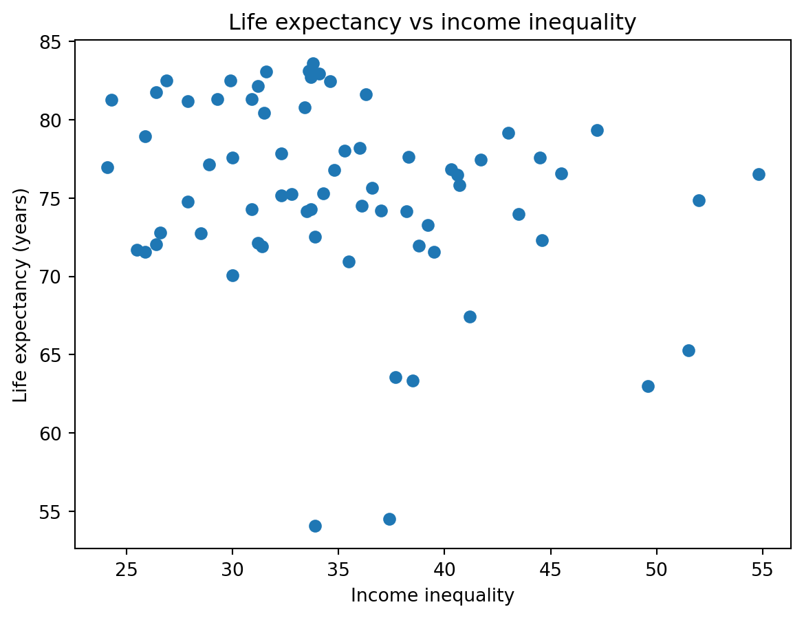

| country | inflation_rate | exports_gdp_share | gdp_growth_rate | gdp_per_capita | adult_literacy_rate | primary_school_enrolment_rate | education_expenditure_gdp_share | measles_immunisation_rate | health_expenditure_gdp_share | income_inequality | unemployment_rate | life_expectancy | total_population | |
|---|---|---|---|---|---|---|---|---|---|---|---|---|---|---|
| 0 | Afghanistan | 13.712102 | 18.380042 | -6.240172 | 357.261153 | NaN | NaN | NaN | 56.0 | 23.088169 | NaN | 14.100 | 65.617 | 40578842.0 |
| 1 | Albania | 6.725203 | 37.197076 | 4.826801 | 7756.961887 | NaN | 96.371230 | 2.729770 | 86.0 | 7.536462 | NaN | 10.785 | 78.769 | 2451636.0 |
| 2 | Algeria | 9.265516 | 30.791556 | 3.600000 | 4960.303343 | NaN | 105.747154 | 4.749247 | 79.0 | 3.634643 | NaN | 12.382 | 76.129 | 45477389.0 |
| 3 | American Samoa | NaN | 46.957520 | 1.735016 | 18017.458938 | NaN | NaN | NaN | NaN | NaN | NaN | NaN | 72.752 | 48342.0 |
| 4 | Andorra | NaN | NaN | 9.564612 | 42414.047986 | NaN | 90.465681 | 2.647280 | 98.0 | 7.521358 | NaN | NaN | 84.016 | 79705.0 |
WDI Indicators (2022) — Exploratory Analysis
1 Overview
This report explores a subset of World Development Indicators (WDI) across countries in 2022.
We focus on the relationships among economic development (GDP per capita), health outcomes (life expectancy), and other social indicators such as unemployment, inflation, and inequality.
2 Load data
3 Data quality checks
We first check the dataset size, column types, and missingness.
(217, 14)country str
inflation_rate float64
exports_gdp_share float64
gdp_growth_rate float64
gdp_per_capita float64
adult_literacy_rate float64
primary_school_enrolment_rate float64
education_expenditure_gdp_share float64
measles_immunisation_rate float64
health_expenditure_gdp_share float64
income_inequality float64
unemployment_rate float64
life_expectancy float64
total_population float64
dtype: objectadult_literacy_rate 0.792627
income_inequality 0.682028
primary_school_enrolment_rate 0.253456
education_expenditure_gdp_share 0.248848
inflation_rate 0.179724
exports_gdp_share 0.161290
unemployment_rate 0.142857
health_expenditure_gdp_share 0.115207
measles_immunisation_rate 0.110599
gdp_growth_rate 0.036866
gdp_per_capita 0.036866
country 0.000000
life_expectancy 0.000000
total_population 0.000000
dtype: float644 Exploratory data analysis (3+ indicators)
In this section, we summarize key indicators and inspect distributions.
4.1 Summary statistics
| life_expectancy | gdp_per_capita | total_population | unemployment_rate | inflation_rate | income_inequality | |
|---|---|---|---|---|---|---|
| count | 217.000000 | 209.000000 | 2.170000e+02 | 186.000000 | 178.000000 | 69.000000 |
| mean | 73.108020 | 21142.747417 | 3.671133e+07 | 7.196930 | 12.645329 | 35.201449 |
| std | 7.942539 | 31040.300784 | 1.415279e+08 | 5.845956 | 19.752353 | 6.883986 |
| min | 18.818000 | 302.992505 | 9.992000e+03 | 0.130000 | -6.687321 | 24.100000 |
| 25% | 67.788000 | 2899.160475 | 8.216370e+05 | 3.484750 | 5.361652 | 30.900000 |
| 50% | 74.160976 | 7655.594210 | 6.664449e+06 | 5.337000 | 7.985187 | 33.900000 |
| 75% | 78.531000 | 28360.304147 | 2.601872e+07 | 9.194500 | 12.259876 | 38.800000 |
| max | 85.746000 | 226052.001905 | 1.425423e+09 | 36.472000 | 171.205491 | 54.800000 |
4.2 Correlations (numeric indicators)
| life_expectancy | gdp_per_capita | total_population | unemployment_rate | inflation_rate | income_inequality | |
|---|---|---|---|---|---|---|
| life_expectancy | 1.000000 | 0.570982 | -0.005244 | -0.115117 | -0.056786 | -0.249699 |
| gdp_per_capita | 0.570982 | 1.000000 | -0.070115 | -0.200769 | -0.163516 | -0.263553 |
| total_population | -0.005244 | -0.070115 | 1.000000 | -0.081104 | -0.027161 | -0.045055 |
| unemployment_rate | -0.115117 | -0.200769 | -0.081104 | 1.000000 | 0.059381 | 0.154770 |
| inflation_rate | -0.056786 | -0.163516 | -0.027161 | 0.059381 | 1.000000 | 0.068290 |
| income_inequality | -0.249699 | -0.263553 | -0.045055 | 0.154770 | 0.068290 | 1.000000 |
5 Relationship between life expectancy and GDP per capita
We expect countries with higher GDP per capita to generally have higher life expectancy, though the relationship may flatten at high income levels.

As shown in Figure 1, life expectancy tends to increase as GDP per capita increases. The income–life expectancy pattern is consistent with the classic “Preston curve” relationship (Preston 1975).
6 Inequality and life expectancy
Next we examine whether countries with higher income inequality tend to have lower life expectancy.

Figure Figure 2 suggests that there isn’t a significant association between life expectancy and income inequality. It may be slightly negative but more tests are needed and may not be significant.
7 Top countries by life expectancy

Figure Figure 3 highlights the highest life expectancy values in the dataset. The top 15 are all above 80 and with countries distributed from Asia, Europe, Oceania, and small island nations.
8 Summary table
We summarize central tendencies and ranges for selected indicators.
| count | mean | median | min | max | |
|---|---|---|---|---|---|
| life_expectancy | 217.0 | 7.310802e+01 | 7.416098e+01 | 18.818000 | 8.574600e+01 |
| gdp_per_capita | 209.0 | 2.114275e+04 | 7.655594e+03 | 302.992505 | 2.260520e+05 |
| total_population | 217.0 | 3.671133e+07 | 6.664449e+06 | 9992.000000 | 1.425423e+09 |
| unemployment_rate | 186.0 | 7.196930e+00 | 5.337000e+00 | 0.130000 | 3.647200e+01 |
| inflation_rate | 178.0 | 1.264533e+01 | 7.985187e+00 | -6.687321 | 1.712055e+02 |
| income_inequality | 69.0 | 3.520145e+01 | 3.390000e+01 | 24.100000 | 5.480000e+01 |
See Table 1 for the key statistics.
9 Conclusion
In 2022, GDP per capita is positively associated with life expectancy (Figure 1).
Other indicators such as inequality and unemployment may also relate to health outcomes, although the strength and direction of these relationships vary across countries. The indicators in this report come from the World Development Indicators database (World Bank 2026).
References
Preston, Samuel H. 1975. “The Changing Relation Between Mortality and Level of Economic Development.” Population Studies 29 (2): 231–48.
World Bank. 2026. “World Development Indicators.” World Bank Open Data.